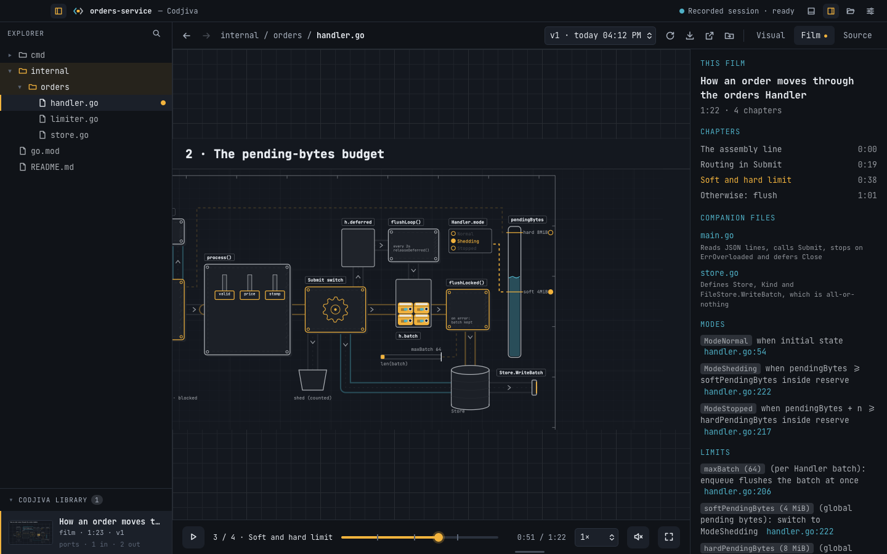
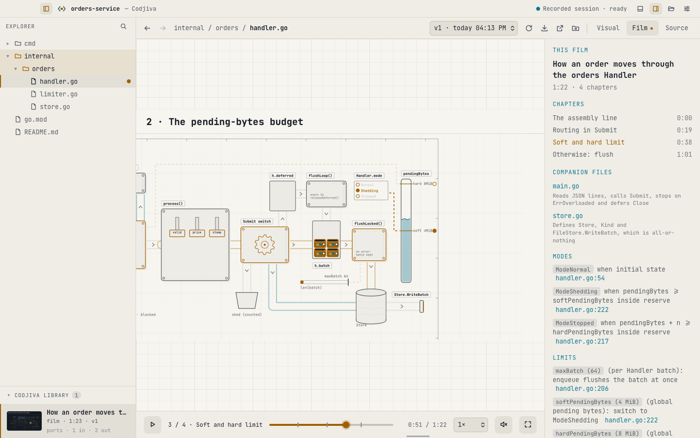
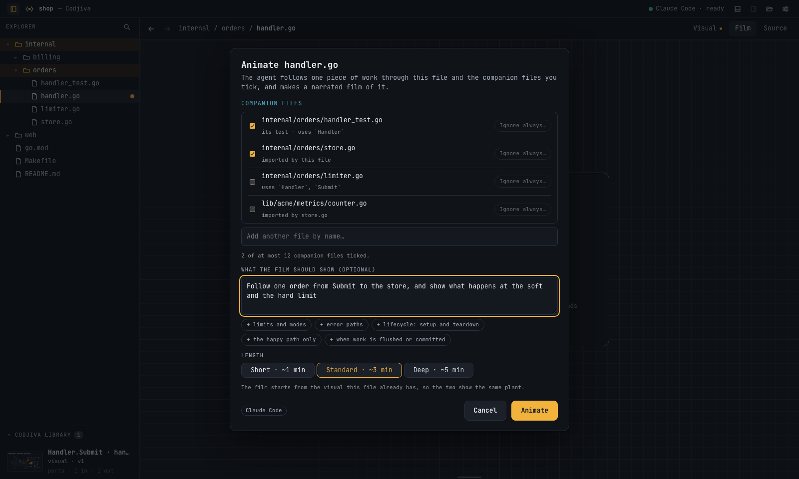
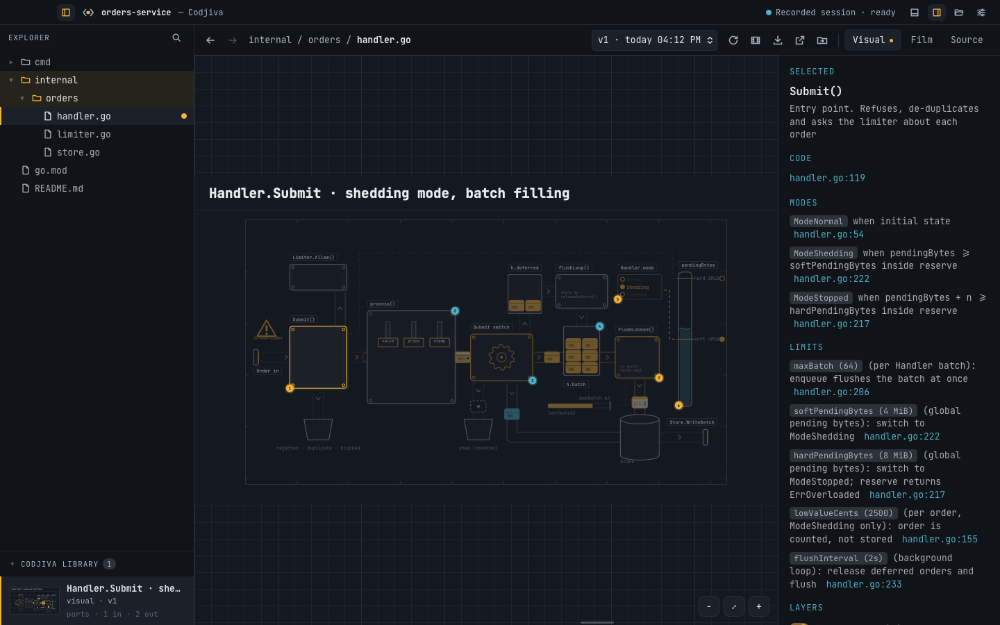
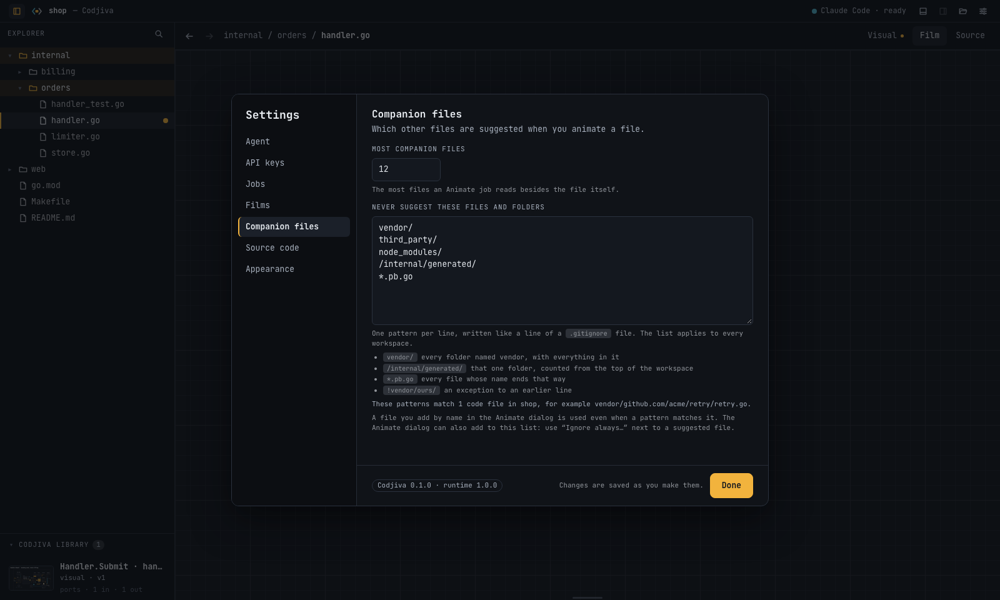

See what your code does.
Not just what it says.
Codjiva opens a folder like an IDE. But where an IDE shows you the text of a file, Codjiva shows you a blueprint of it: the machines, the pipes between them, the limits, and a short narrated film that follows one request from the way in to the way out. The coding agent you already use reads the code and draws it.
Free and open source under Apache 2.0. No account, no telemetry. Everything it makes is a plain HTML file in a .codjiva folder next to your code.


This is a real Codjiva film. Press play.
Claude Code made it from one Go file, a made-up order handler with a batch, a rate limiter and a soft and a hard memory limit. Nothing here was drawn by hand. The page below is the same single HTML file the app saves, with its own player.
A picture, a film, and the pipeline between files.
Every one is drawn with the same small set of parts, so a tank always means a shared limit and a press always means an ordered step. Once you have read one, you can read them all.
A still blueprint you can explore
One file, or a whole folder, as a plant of machines and pipes.
- Click a part for its role and the line of code it stands for
- Numbered markers explain the points that matter
- Switch data flow, control, error paths and labels on and off
A narrated film of one unit of work
One order, request or log line, followed from the way in to the way out.
- Chapters for the normal path, each limit, and what happens when a limit is hit
- Slows down by itself while an explanation is on screen
- Plays from 0.75× to 4×, with sound if you want it
Several files joined into one pipeline
Tick two or more visuals. Codjiva proposes where one hands work to the next.
- Joins are found from the calls and names the files share
- A still picture, or a film that crosses the join
- Marked stale when a file of any part changes
Your agent reads the code. Codjiva checks the drawing.
Codjiva has no model of its own. It gives your coding agent a drawing kit and a set of rules, lets it read your file, and then tests what comes back before you see it.
- Open a folder and pick a fileSay what the picture should show, or leave that empty. For a film, Codjiva suggests companion files from the imports, the tests and the files that use this one. You tick the ones that matter, and can ignore folders such as
vendor/for good. - The agent draws with Codjiva's partsIt writes a few small source files: the plant, one scene per chapter, and a list of timings and explanations. It may write only inside
.codjiva/. A write guard checks every other file and can put back anything that changed. - Codjiva builds and tests the resultThe sources become one HTML page. A hidden frame plays it and looks for labels that overlap, text that does not fit, scenes that change between two runs, and state that jumps between chapters. Problems go back to the agent to fix.
- Watch, then say what should changePause the film, point at the thing you mean, and write one sentence. A new version is made with only that change. Earlier versions are kept.

It works like the editor you already know.
Codjiva is laid out like an IDE, and it behaves like one. The only thing that is different is what you see in the middle.
It reads your code. It writes one folder.
.codjiva/ in the folder you opened. A film is a single HTML file that opens offline in any browser.

It uses the agent you are already signed in to.
Codjiva finds the coding agents installed on your computer and runs the one you pick, without a terminal. Or give it an API key and it talks to the provider itself.
| Agent | How | Status | Notes |
|---|---|---|---|
| Claude Code | claude | tested | Confined to .codjiva/ by its own permission rules. A visual takes about three to five minutes, a one-minute film about six. |
| Cursor Agent | cursor-agent | tested | Works. It cannot be confined as tightly, so the write guard is what protects your files. |
| Codex CLI | codex | not yet confirmed | Supported through definition files that have not been run against the real programs yet. Settings marks them so. |
| Gemini CLI | gemini | not yet confirmed | |
| Antigravity | agy | not yet confirmed | |
| Pi | pi | not yet confirmed | |
| API key | Anthropic, OpenAI, Google Gemini, or any server that speaks the OpenAI chat format | not yet confirmed | No agent program needed. Built and tested against a stand-in server, not yet against the live services. |
Codjiva is not made by, affiliated with or endorsed by Anthropic, Cursor, OpenAI, Google or any other provider. Each agent runs under your own account and its provider's terms, and what a job costs is between you and them.
Free, for macOS, Windows and Linux.
Get Codjiva
Pick the build for your system on the releases page.
You also need one coding agent installed and signed in, or an API key. Claude Code is the one Codjiva is tested with most.
Or build it from source
You need Rust, Node.js 22 and, on Linux, the system packages Tauri lists plus libdbus-1-dev.
git clone https://github.com/aayushch/codjiva cd codjiva/ui npm ci npx tauri dev # run the app npx tauri build # build an installer